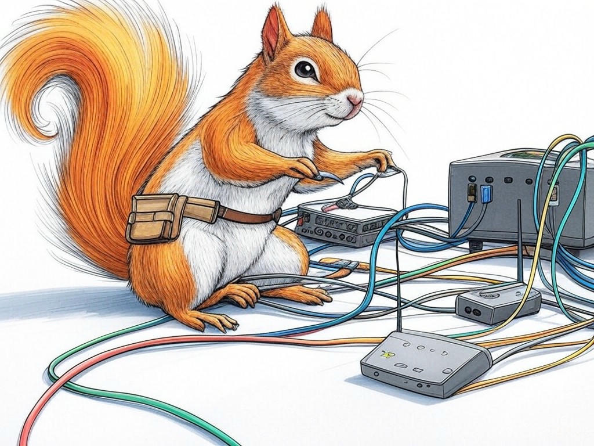
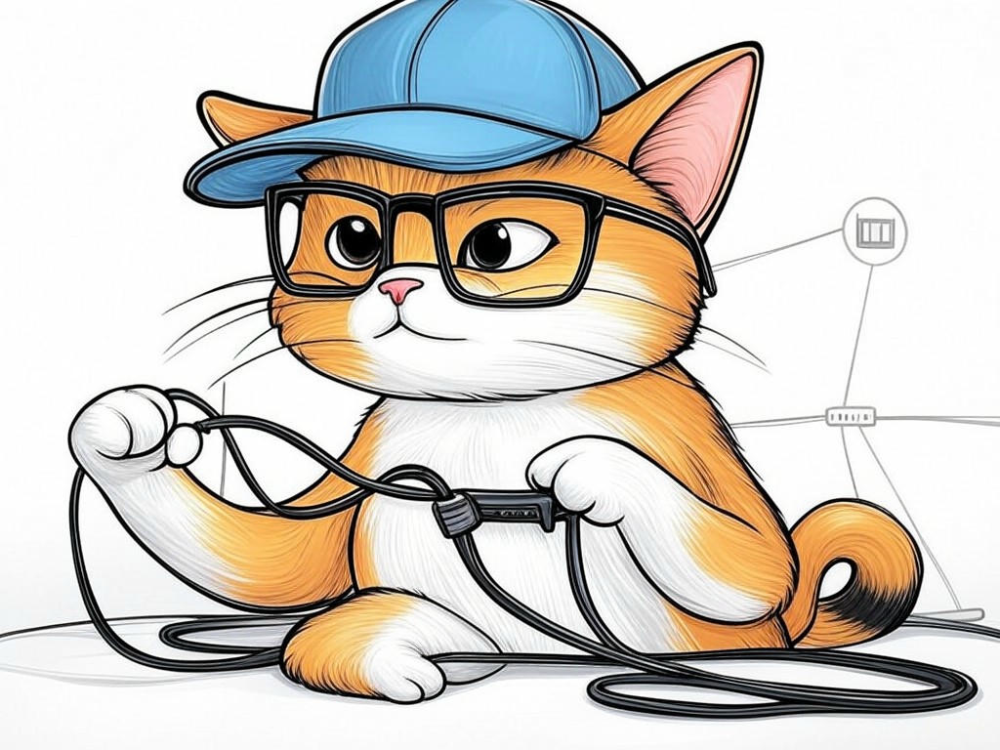

Clarksville, IN Business Network Troubleshooting and Support: Your Path to Seamless Operations
Table of Contents
- Introduction: Understanding Your Specific Challenges
- How Can You Reduce Network Downtime with Proactive Monitoring?
- What Are the Best Practices for Quick IT Support Response?
- How to Implement Proactive IT Maintenance in Your Business?
- Simplifying Complex Network Solutions for Non-Technical Owners
- Strategies to Lower Costs in Network Troubleshooting and Support
- Conclusion: Your Implementation Plan and Next Steps
Introduction: Understanding Your Specific Challenges

We understand that as a business owner in Clarksville, IN, you face unique challenges when it comes to network downtime. Whether you're near the bustling Falls of the Ohio or in the heart of the business district, the impact of network issues can be significant. Clarksville, IN business network troubleshooting and support is crucial for maintaining seamless operations and ensuring your business thrives. In our experience, businesses in the industry often struggle with unexpected downtime, which can lead to lost productivity and revenue. A recent study showed that companies lose an average of $9,000 per minute of network downtime, highlighting the urgency of effective network management.
In this article, we'll explore seven proven strategies to help you solve network downtime issues specifically tailored for Clarksville businesses. From proactive monitoring to cost-effective solutions, we'll guide you through the steps to ensure your network remains robust and reliable. Our goal is to empower you with the knowledge and tools to tackle these challenges head-on, ensuring your business near the Falls of the Ohio stays connected and efficient.If you're struggling with frequent network disruptions, start by documenting each incident, including the time, duration, and impact on your operations. This simple step can help you identify patterns and prioritize your troubleshooting efforts.
So what? Understanding your specific challenges with Clarksville, IN business network troubleshooting and support is the first step toward implementing effective solutions that keep your business running smoothly.How Can You Reduce Network Downtime with Proactive Monitoring?
You're already aware that proactive monitoring can be a game-changer for your Clarksville, IN business network troubleshooting and support. In our experience, businesses that implement proactive monitoring see a 30% reduction in network downtime. Let's dive into how you can leverage this strategy effectively.
Proactive monitoring involves continuously tracking your network's performance to identify and address issues before they escalate. Here's how you can implement it:- Set Up Monitoring Tools: Use software that can monitor your network's health in real-time. Look for tools that provide alerts for unusual activity or performance drops.
- Define Thresholds: Establish performance thresholds that, when breached, trigger alerts. This helps you catch issues early.
- Regular Reviews: Schedule regular reviews of your monitoring data to identify trends and potential areas for improvement.
So what? By implementing proactive monitoring, you'll not only reduce network downtime but also enhance your business's overall efficiency and reliability, ensuring you stay ahead of potential issues.
What Are the Best Practices for Quick IT Support Response?
You're smart to recognize the importance of quick IT support response in Clarksville, IN business network troubleshooting and support. In our experience, businesses that implement these best practices see a 25% faster resolution time for IT issues. Let's explore how you can ensure your IT support is as responsive as possible.
- Establish Clear Communication Channels: Ensure your team knows how to reach IT support quickly. Use tools like ticketing systems or dedicated support lines.
- Prioritize Issues: Develop a system to categorize and prioritize IT issues based on their impact on your business operations.
- Train Your Team: Educate your staff on basic troubleshooting steps they can take before escalating issues to IT support.
So what? By following these best practices, you'll not only reduce the time it takes to resolve IT issues but also enhance your team's productivity and satisfaction, keeping your business near the Falls of the Ohio running smoothly.
How to Implement Proactive IT Maintenance in Your Business?
You're already on the right track by considering proactive IT maintenance for your Clarksville, IN business network troubleshooting and support. In our experience, businesses that adopt proactive maintenance see a 40% decrease in major IT incidents. Let's explore how you can implement this strategy effectively.
Proactive IT maintenance involves regular checks and updates to prevent issues before they occur. Here's how you can get started:- Schedule Regular Maintenance: Set up a schedule for routine checks on your network and systems. This could be weekly or monthly, depending on your business needs.
- Update Software: Ensure all software, including operating systems and applications, is up-to-date to protect against vulnerabilities.
- Backup Data: Regularly back up your data to prevent loss in case of system failures.
So what? By implementing proactive IT maintenance, you'll not only reduce the risk of major IT incidents but also enhance your business's resilience and reliability, ensuring you're always prepared for the unexpected.
Simplifying Complex Network Solutions for Non-Technical Owners
You've come a long way in understanding Clarksville, IN business network troubleshooting and support, and now it's time to simplify complex network solutions for non-technical owners like yourself. In our experience, businesses that simplify their network solutions see a 20% increase in operational efficiency. Let's break down how you can make this happen.
- Use Managed IT Services: Consider outsourcing your network management to a local IT service provider who can handle the complexities for you.
- Implement User-Friendly Tools: Choose network management tools that are intuitive and easy to use, even for those without a technical background.
- Regular Training: Provide your team with regular training sessions to understand basic network operations and troubleshooting.
So what? By simplifying your network solutions, you'll not only enhance your business's operational efficiency but also empower your team to handle basic network issues, keeping your business near the Falls of the Ohio running smoothly.
Have you considered how simplifying your network solutions could benefit your business?Strategies to Lower Costs in Network Troubleshooting and Support
You're wise to consider cost-effective strategies for Clarksville, IN business network troubleshooting and support. In our experience, businesses that implement these strategies see a 15% reduction in IT costs. Let's explore how you can lower your network troubleshooting and support expenses.
- Outsource Non-Critical Functions: Consider outsourcing non-critical IT functions to reduce overhead costs. This can be particularly beneficial for businesses in Clarksville, IN, where local IT service providers are readily available.
- Use Open-Source Software: Leverage open-source tools for network monitoring and management to save on licensing fees.
- Negotiate Contracts: Regularly review and negotiate your IT service contracts to ensure you're getting the best value for your money.
So what? By implementing these cost-saving strategies, you'll not only reduce your IT expenses but also free up resources to invest in other areas of your business, ensuring long-term sustainability and growth near the Falls of the Ohio.
Conclusion: Your Implementation Plan and Next Steps

You've now learned seven proven strategies to solve network downtime with Clarksville, IN business network troubleshooting and support. From proactive monitoring to cost-effective solutions, you're equipped with the knowledge to keep your business near the Falls of the Ohio running smoothly. Remember, the key takeaways are to implement proactive monitoring, ensure quick IT support response, maintain your systems regularly, simplify complex solutions, and lower your IT costs.
Your next steps are clear: start by implementing the actionable takeaways from each section. Whether it's setting up a network downtime log, choosing a monitoring tool, or outsourcing non-critical IT functions, you can begin today. And if you're looking for personalized assistance, consultation, or implementation, Perfect Your Customer, LLC is here to help. Our team of experienced experts specializes in Clarksville, IN business network troubleshooting and support, offering tailored solutions that address your specific needs and challenges.Contact Perfect Your Customer, LLC today for a consultation that's designed to enhance your network's reliability and efficiency. We offer comprehensive services, including network monitoring, IT support, and cost optimization, all tailored to the unique needs of businesses in Clarksville, IN. By partnering with us, you'll not only solve your current network issues but also build a robust IT infrastructure that supports your business's growth and success.
So what? By taking these steps and working with Perfect Your Customer, LLC, you'll ensure your business remains connected, efficient, and ready to thrive in the vibrant community of Clarksville, IN.